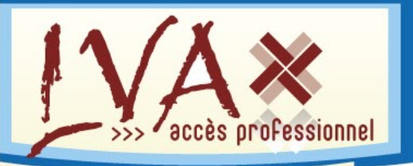

Bienvenue dans le pôle nature et environnement du SIAM
Centré autour du Haut-Commissariat aux Eaux et Forêts et à la Lutte Contre la Désertification (HCEFLCD) et de ses différentes branches, ce pôle s’intéresse aux défis environnementaux d’aujourd’hui : l’écologie, les nouvelles énergies et le développement durable. Il nous permet d’avoir une perspective différente sur l’agriculture. Cet espace concerne aussi la pêche continentale, l’horticulture, ainsi que les loisirs en plein air comme la chasse et le jardinage.
S'adressant aux particuliers comme aux professionnels, la vannerie d'aujourd'hui se spécialise dans la vente et l'importation de vannerie